An effect plot says what a model claims. This vignette is about the other question: whether to believe it.
Most of what follows is aimed at presence/absence
models — the species distribution case, where the response is
whether something was there. AUC, TSS and calibration are defined for a
binary outcome and nothing else, so applied to a Gaussian model of
biomass they would return a number with no meaning. fancyfx
refuses that rather than computing it. Permutation importance is the
exception: it works for any model.
There are three distinct questions here, and it is worth keeping them apart:
| Question | Function |
|---|---|
| Does it rank presences above absences? | plotROC() |
| Where should the cutoff go? | plotThreshold() |
| Are the probabilities honest? | plotCalibration() |
| Which predictors is it using? | plotImportance() |
The first three are not interchangeable. A model can rank perfectly and still report probabilities that are wildly wrong.
The most important thing on this page
newdata is a required argument to every
function here. There is no default, and the default is not the training
data.
That is deliberate. A model scored against the data it was fitted to flatters itself, sometimes enormously, and an in-sample ROC curve can look excellent for a model with no predictive value at all. Making that the easiest figure to produce would be a disservice.
Passing the training data still works — refusing outright would be obstructive, and sometimes it is genuinely what you want — but it warns, and the figure is annotated so it cannot be quietly published as validation:
plotROC(sdm, train, title = "Scored on the training data")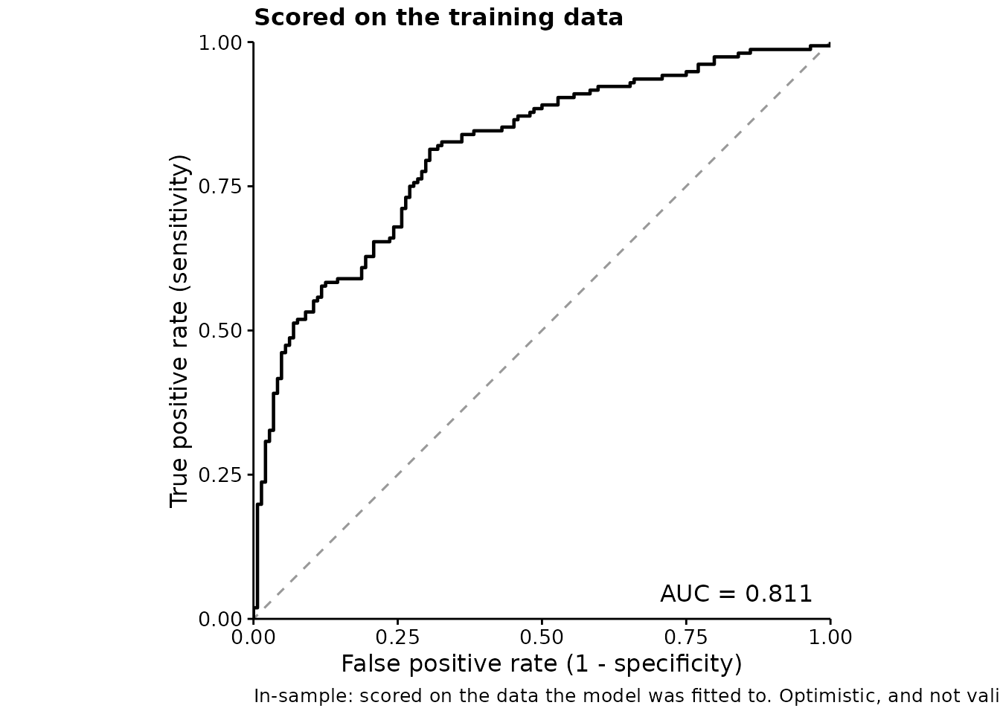
Read the caption. Compare it with the honest version:
plotROC(sdm, test, title = "Scored on held-out data")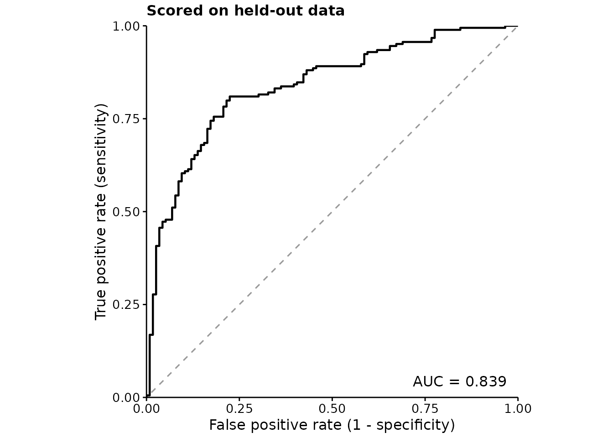
Discrimination: the ROC curve
The ROC curve traces sensitivity against the false positive rate as the decision threshold moves. The diagonal is chance. AUC summarises the whole curve into the probability that a randomly chosen presence is ranked above a randomly chosen absence.
fancyfx computes AUC from ranks — the Mann-Whitney form
— rather than by integrating the drawn curve, so tied predictions are
handled exactly. The curve itself is drawn as a step function, because
that is what an empirical ROC is; joining the corners would draw
operating points the model cannot reach.
The numbers are available on their own:
m <- threshold_metrics(sdm, test)
attr(m, "auc")
#> [1] 0.8389243
attr(m, "prevalence")
#> [1] 0.6133333
head(m, 3)
#> .threshold .sensitivity .specificity .tpr .fpr .tss
#> 1 Inf 0.000000000 1.0000000 0.000000000 0.00000000 0.000000000
#> 2 0.9463654 0.005434783 1.0000000 0.005434783 0.00000000 0.005434783
#> 3 0.9461274 0.005434783 0.9913793 0.005434783 0.00862069 -0.003185907Choosing a cutoff
AUC is threshold-free, which is its strength and its limitation: it says how well the model ranks, and nothing about where to cut. For that:
plotThreshold(sdm, test)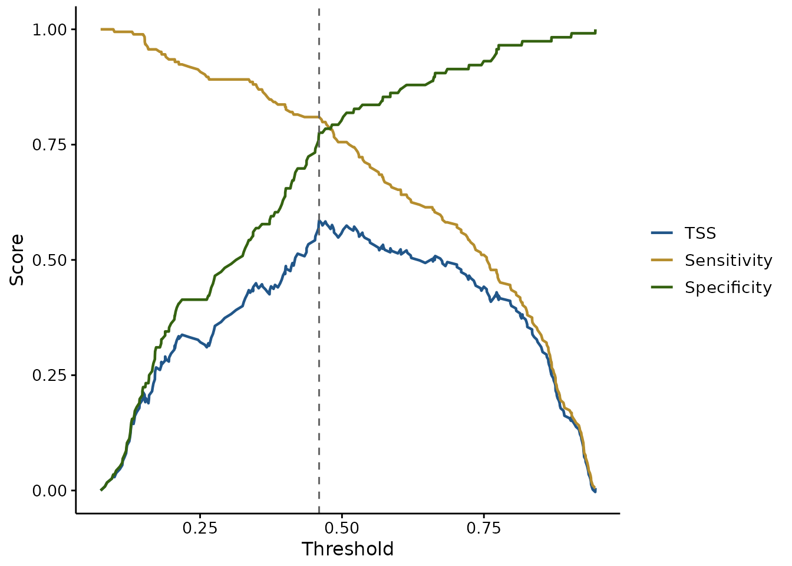
Sensitivity and specificity trade off against each other, and TSS (Allouche et al. 2006) is their sum less one — so its peak, marked with the dashed line, is the cutoff balancing them best. TSS is preferred to raw accuracy in species distribution work because it is not inflated by a rare positive class.
That peak is one defensible choice, not the only one. If a false absence costs more than a false presence — a missed occurrence of something you are trying to protect — then the right cutoff is not where TSS peaks. Both curves are drawn so that judgement can be made rather than assumed.
# TSS alone, without the curves it is built from
plotThreshold(sdm, test, metrics = "tss", mark.best = TRUE)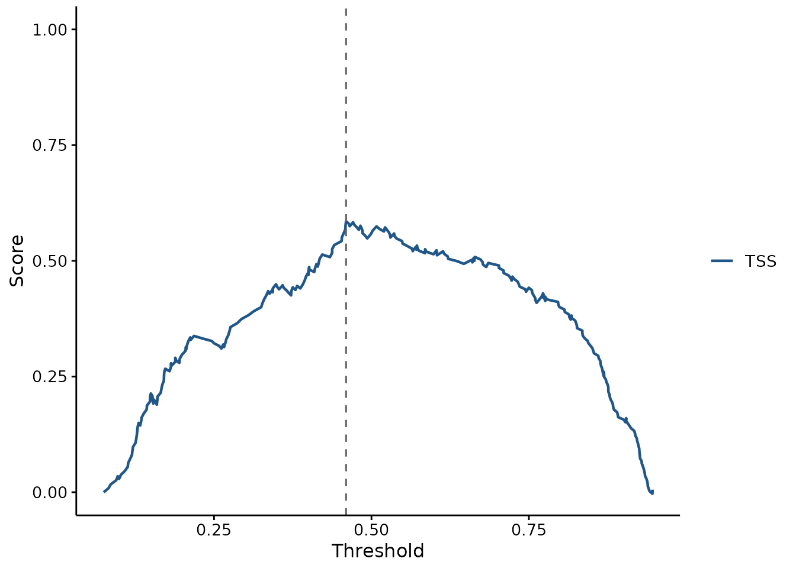
Calibration: are the probabilities honest?
Discrimination and calibration are different properties, and a model can be good at one and bad at the other.
AUC only cares whether presences are ranked above absences. That makes it blind to any monotone rescaling of the predictions: a model can post an excellent AUC while every probability it reports is far too extreme. If those probabilities are only ever compared with each other, that may not matter. If they feed a decision, an area of suitable habitat, or an expected count, it matters a great deal.
plotCalibration(sdm, test)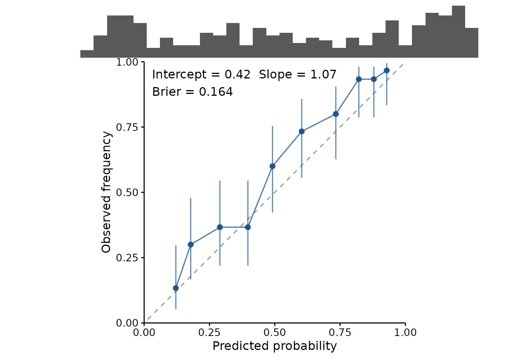
A well calibrated model sits on the diagonal: when it says 0.7, the outcome happens about 70% of the time. The reported slope makes that concrete — 1 is perfect, and below 1 means the predictions are too extreme.
To see what a failure looks like, here is the same model with its coefficients inflated. The ranking is untouched, so its AUC is identical:
overconfident <- sdm
overconfident$coefficients <- overconfident$coefficients * 2.5
c(original = attr(threshold_metrics(sdm, test), "auc"),
overconfident = attr(threshold_metrics(overconfident, test), "auc"))
#> original overconfident
#> 0.8389243 0.8389243
plotCalibration(overconfident, test, title = "Same AUC, useless probabilities")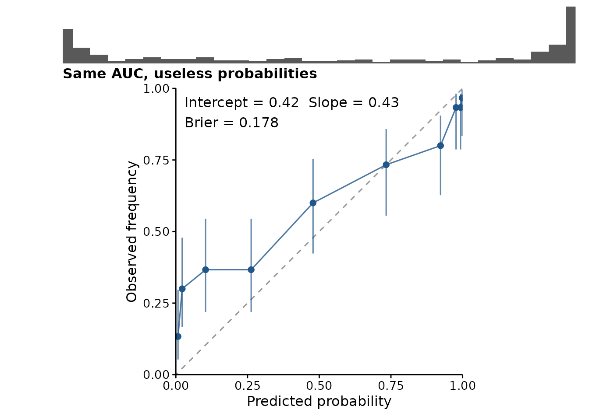
The curve is flatter than the diagonal and the rug has piled up against 0 and 1. AUC saw none of this.
Reading the plot honestly
Two features of the plot exist to stop it being over-read:
- The rug. Calibration is usually worst at the extremes, and the extremes usually hold the fewest predictions — so the most eye-catching departures from the diagonal are often the least trustworthy points. The rug shows where the predictions actually are.
-
The interval on each bin, which is a Wilson score
interval rather than a normal approximation. With few observations in a
bin, or an observed frequency near 0 or 1 — both routine here — the
normal approximation puts the bounds outside
[0, 1], and a plot should not claim something impossible.
Binning is a genuine trade-off, exposed as binning.
Quantile bins (the default) hold equal numbers of observations, so every
point is equally reliable, at the cost of varying bin widths.
Equal-width bins are easier to read but leave the extremes nearly empty
— precisely where the interesting behaviour is.
plotCalibration(sdm, test, binning = "width", bins = 8)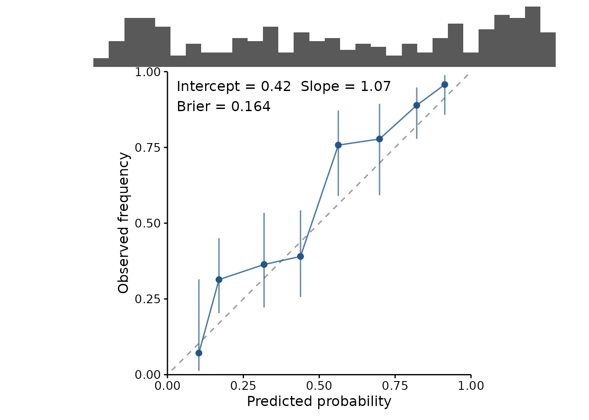
The numbers are available on their own, including the Brier score — the mean squared error of the probabilities, covering calibration and discrimination in one figure:
cal <- calibration_estimates(sdm, test)
attr(cal, "calibration")
#> intercept slope
#> 0.4210293 1.0709035
attr(cal, "brier")
#> [1] 0.1636824
head(cal, 3)
#> .bin .predicted .observed .lower .upper .n
#> 1 [0.0748,0.152] 0.1213651 0.1333333 0.05309655 0.2968133 30
#> 2 (0.152,0.212] 0.1781950 0.3000000 0.16664748 0.4787579 30
#> 3 (0.212,0.352] 0.2899285 0.3666667 0.21873921 0.5448644 30Cross-validation, and why it is weaker
Folds are supported, and drawn per fold so the spread is visible rather than averaged into a single reassuring number:
set.seed(2)
folds <- sample(rep(1:4, length.out = nrow(test)))
plotROC(sdm, test, folds = folds)
#> Scoring within cross-validation folds. Cross-validated metrics are weaker evidence than a genuinely independent hold-out: the folds come from the same sample, and the model saw the rest of it. For spatial data the gap is wider still, because a held-out point usually has a near neighbour in the training folds -- use spatially blocked folds rather than random ones, and read the spread across folds as the honest part of the picture.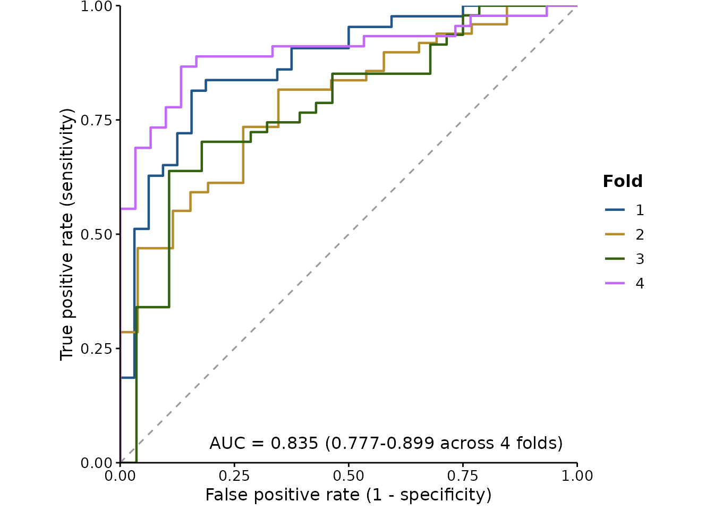
The first time you use folds in a session, the package
says something you should read. Cross-validated metrics are
weaker evidence than an independent hold-out: the folds
come from the same sample, and the model saw the rest of it. A
cross-validated score speaks to how stable the fit is, not to how it
will behave somewhere new.
For spatial models the gap is wider still. With random folds, a
held-out point usually has a near neighbour among the training folds, so
the model has in effect already seen it, and the score is optimistic for
reasons that have nothing to do with the model being good.
Spatially blocked folds are the honest version — blocks
of contiguous space held out together, so the distance between training
and testing data is real. Packages such as blockCV generate
them; pass the resulting fold IDs straight in.
The spread across folds is the part worth reading. If the AUC range is wide, or the TSS-maximising cutoff moves substantially between folds, then reporting a single threshold to three decimal places is false precision.
Deviance
AUC only cares about ranking, so it cannot see predictions that are ordered correctly and still wrong. Deviance can, and it penalises confident mistakes hardest — usually the failure that matters.
predicted <- predict(sdm, test, type = "response")
fitted.deviance <- calc_deviance(test$y, predicted, "binomial")
null.deviance <- calc_deviance(test$y, rep(mean(test$y), nrow(test)),
"binomial")
# Proportion of deviance explained
1 - fitted.deviance / null.deviance
#> [1] 0.2527473It is most useful as a relative measure. Against the null deviance —
what you would get predicting the overall mean for everything — the
ratio is the proportion of deviance explained, the number
boosted-regression-tree work reports as a matter of course.
family also takes "poisson",
"gaussian" and "laplace", so it is not
restricted to presence/absence.
How independent is the hold-out, really?
Everything above assumes the evaluation data tells you something the
training data did not. spatial_sorting_bias() checks that
assumption instead of taking it on faith.
The statistic is the ratio of two mean nearest-neighbour distances: from each test presence to the closest training presence, over the same for each test absence.
set.seed(1)
training <- cbind(runif(150, 0, 10), runif(150, 0, 10))
# A split whose presences sit on top of the training data
near <- cbind(runif(60, 0, 10), runif(60, 0, 10))
background <- cbind(runif(60, 0, 40), runif(60, 0, 40))
spatial_sorting_bias(near, background, training)
#> presence absence ssb
#> 0.38096261 19.08337421 0.01996306Near 1 means the test presences and test absences are equally far from the training data — the split is doing its job. Near 0 means the presences are much closer, and a model can score well by knowing roughly where the training data was without knowing anything about the species. Its AUC is then measuring the split rather than the species.
This is what the cross-validation warnings elsewhere in the package
are about. They say the problem exists; this says how bad it is for a
particular split, which is the version worth putting in a methods
section. Pass geo = TRUE for longitude and latitude, and
distances become great-circle.
A low value is not a reason to throw the model away. It is a reason to use spatially blocked folds, or to sample the test absences to match the presences’ distance distribution — and then to say which you did.
Predictions you already have
Everything above takes a fitted model and re-predicts. That keeps the scored predictions and the model provably in step, but it assumes you are holding a model that can reproduce them — and a cross-validated workflow is not.
Under k-fold cross-validation, each observation is predicted by the
one fold model that never saw it. Those honest predictions live across
k models, none of which is the final fit. Re-predicting
from the final model on the same rows answers a different and more
flattering question.
held_out() is the way in for those. Wrap the observed
outcomes and the predictions that were actually made for them, and pass
the result anywhere a model would go:
set.seed(1)
truth <- rbinom(200, 1, 0.3)
score <- plogis(rnorm(200, ifelse(truth == 1, 1, -1)))
pairs <- held_out(truth, score)
attr(threshold_metrics(pairs), "auc")
#> [1] 0.9299906
plotROC(pairs, title = "Scored from stored cross-validated predictions")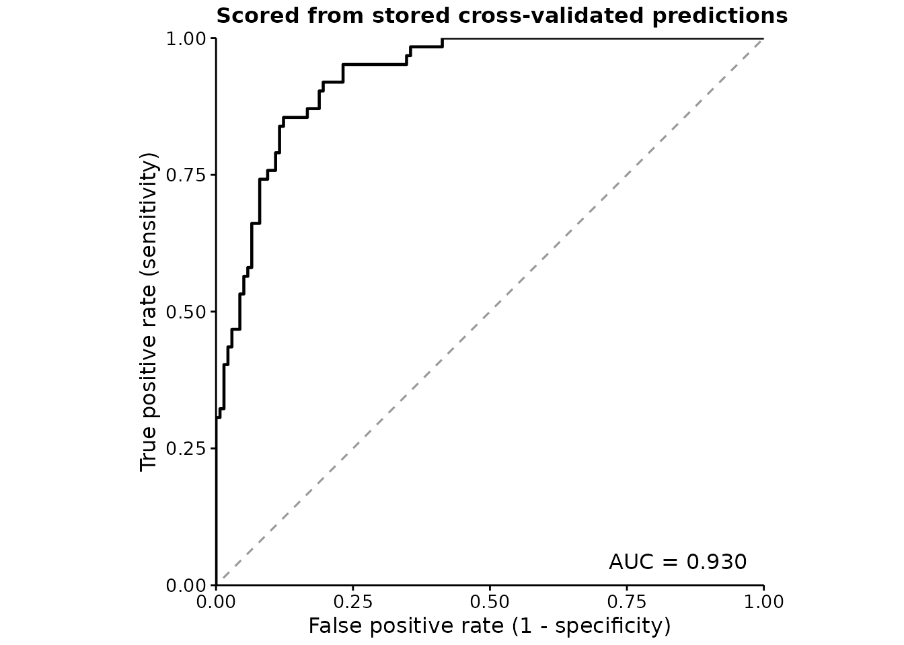
Two honest limits. It cannot verify the predictions are out of sample
— nothing in a pair of numeric vectors records which model made them —
so in.sample is taken on trust, and passing training
predictions here gets no warning, unlike the model path which inspects
the fit. And it cannot support plotImportance(), which has
to shuffle a predictor and re-predict; that needs a model by
construction, not a record of what one once said.
Variable importance
Which predictors is the model actually leaning on?
plotImportance(sdm, test, n.perm = 20)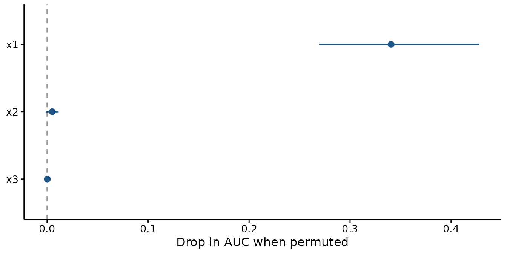
The measure is permutation importance (Breiman 2001): shuffle one predictor, breaking its relationship with the response while leaving its distribution intact, and see how much worse the model scores. For a binary response the metric is the drop in AUC; otherwise the increase in RMSE. Either way, bigger means the model was relying on it more.
It is model-agnostic — it needs nothing but the ability to predict — so a GAM, a GLM, a mixed model and a Bayesian fit all give numbers that mean the same thing and can be compared.
permutation_importance() gives the numbers behind the
plot — one row per variable per permutation, so you can summarise them
your own way:
imp <- permutation_importance(sdm, test, n.perm = 20)
aggregate(.importance ~ .variable, data = imp, FUN = mean)
#> .variable .importance
#> 1 x1 0.3406695090
#> 2 x2 0.0051021364
#> 3 x3 0.0002811094
attr(imp, "metric")
#> [1] "auc"The point is drawn at the mean and the line spans the permutations.
The spread is the point: a variable whose range crosses
the dashed zero line did no measurable work, and a bar chart of means
would hide that. Here x1 is doing everything and
x2 and x3 are doing nothing, which is exactly
how the data were simulated.
Because permutation is random, results are seeded by default — an unseeded figure cannot be redrawn. The caller’s random stream is restored afterwards, so this does not silently change results elsewhere in your script.
Two things it does not tell you
Correlated predictors share credit badly. If two variables carry much the same information, permuting either one alone barely hurts, because the other still carries it. Both look unimportant and the pair is not. This bites hard on environmental covariates, which are routinely collinear — sea surface temperature and depth, say. If a variable you expect to matter shows near-zero importance, check what it is correlated with before concluding anything.
It measures use, not effect size. A variable can be
important here and have an effect too small to care about, or the
reverse. Read it beside plotEffects(), not instead of
it:
ggpubr::ggarrange(
plotImportance(sdm, test, n.perm = 20),
plotEffects(sdm, train, "x1", scale = "response",
ylab = "P(presence)"),
labels = c("A", "B"), widths = c(1, 1.1)
)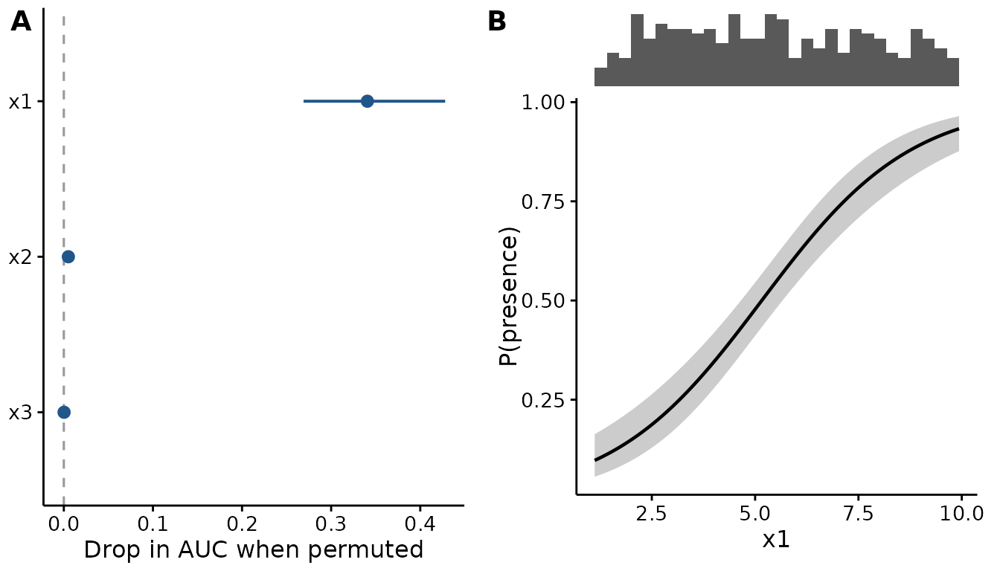
Putting it in a paper
Everything here uses the same theme, palette and panel machinery as
the effect plots, so an evaluation figure and an effect figure sit
together without adjustment. See the “Publication-ready output” section
of vignette("fancyfx") for base_size, panel
labels and saving at a fixed size.